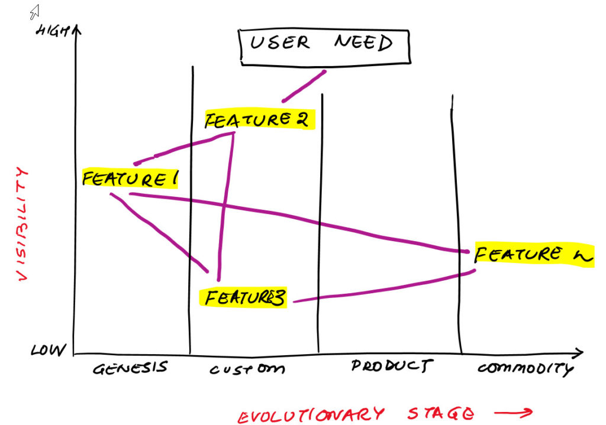

Product Strategy Workshop

What is this workshop?
Build a product strategy in 60 minutes
Why should I care?
Your product-market fit will be stronger if you explore multiple product strategies
Who is this for?
Product Managers
Agenda
- Watch how we draft a Wardley Map for a new product
- Watch how we generate a few product strategies
- Understand How to do that with your team
- Understand where to learn more about Wardely Mapping